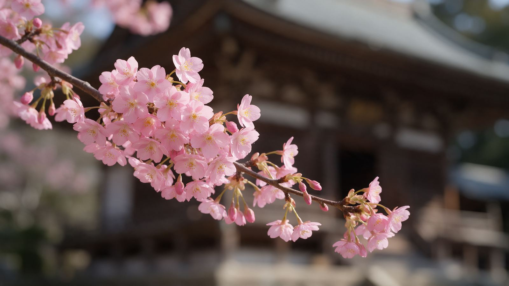

Översikt
Fjorton dagar, fem orter. Klicka på en dag för att hoppa ner till detaljerna.
| Dag | Ort | Huvudsakliga aktiviteter |
|---|
🎏 Helgdagar & Festivaler
En nationell helgdag och flera traditionella evenemang infaller under resan. Datum som bara följer en årlig regel är markerade — bekräfta dem närmare avresan.

Bunka no Hi (Kulturdagen) — 3 nov
Nationell helgdag. Ni är i Kanazawa, där Kenrokuen brukar ha fri entré denna dag — men också fler besökare än vanligt.
Gion Odori — 1–10 nov (ni ser den 4 nov)
Geisha- och maiko-dans i Gion Higashi, mer intim och autentisk än vanliga Gion Corner. Redan bokad.
Krysantemumutställning, Shinjuku Gyoen — 1–15 nov
Kejsarens blomma i traditionella arrangemang. Pågår både er första dag och hela slutveckan i Tokyo. Obs att parken är stängd på måndagar.
Arashiyama Momiji Matsuri — 8 nov
Hålls andra söndagen i november, ca kl 10–15, med traditionella båtar på Ōi-floden. Krockar med er avresedag till Hakone — ett kort morgonbesök hinns med. Ställs in vid regn.
Shichi-Go-San — helgerna i november
Firande för barn som fyller 3, 5 eller 7 år. Själva dagen är 15 nov, dagen efter er hemresa, men familjer besöker helgedomarna under helgerna innan — räkna med kimonoklädda barn vid Senso-ji och Meiji Jingu den 8 och 14 nov.
Design Festa vol. 64 — 14–15 nov
Japans största konstmässa på Tokyo Big Sight i Ariake, ca 10 000 konstnärer. Sammanfaller med hemresedagen — möjligt om planet går sent.
📌 Det ni nätt och jämnt missar
Tori-no-ichi i Asakusa infaller 2026 bara den 7 och 19 nov — ni är i Kyoto den 7:e och hemma den 19:e. Hakone Daimyo Gyoretsu hålls årligen 3 nov, då ni är i Kanazawa. Kyotos stora kvällsupplysningar startar efter er avresa därifrån (Kodai-ji är undantaget — den pågår). Kanazawas höstupplysning börjar 7 nov, tre dagar efter att ni rest vidare.
Dag för dag
Förslagen är rangordnade: PRIO 1 är det starkaste valet för passet, sedan 2 och 3. Restaurangerna är valda i vardaglig till medelprisklass med traditionell mat och miljö.